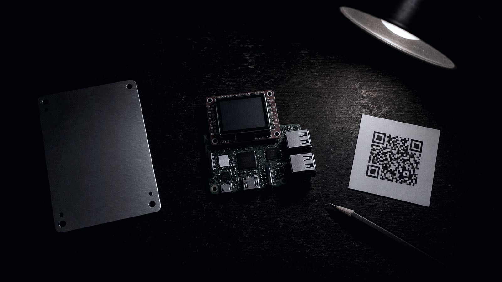

A public demo · the whole sitting, screen for screen
The wizard below is not drawn, it is replayed. A script drives the real program, build …, through a complete sitting and records what it puts on the console, colours included. Then the objects it leaves behind, and how the halves are placed so your heirs can find them and a thief cannot.
every frame generated from the real program · demonstration values, not a real wallet
no cookies · no analytics · no requests leave this page
00 · what this is
SPLITSTEEL takes the twelve or twenty-four words of a wallet and turns them into two random-looking halves, the pad and the ciphertext. Either half on its own carries no information about the seed at all, not to a thief and not to a computer of any size. Both together give the words back with a pencil and a printed table. The sitting that makes them happens on a small computer that has never been online and forgets everything when the power goes off, and this page replays that sitting exactly as the machine shows it.
This is a demonstration for feedback. The values on every screen are published test values. Nothing here asks for a seed, and nothing here ever should.
01 · before you sit down
The blender is a Raspberry Pi with the SPLITSTEEL card in it. It has no Wi-Fi hardware and no network lead, nothing typed into it is ever written to the card, and when the power goes off everything it knew is gone. Everything else on the table is paper, dice and steel.
The wizard asks you to confirm this before it does anything, and it means it.
02 · the sitting, screen for screen
Eight episodes. Pick one, or let it run: it plays the whole sitting in order, typing what you would type, and the panel beside the screen fills in the cards and paper on the table as the screens ask for them. Every frame is the wizard's own output, captured by driving build … with a fixed script; the page cannot drift from the code because the test suite regenerates it and compares.
This replay needs JavaScript.
Space plays and pauses; the arrow keys step one screen. Too quick? Choose ½× or ¼×; the screen also waits longer whenever there is a new caption to read. The seed in this replay is a published demonstration value: …. It must never hold money.
03 · after the sitting
The blender is the only machine that ever holds your whole seed. Everything after it handles one half, and a half is a random number, so the computers that make the copies need no trust and no skill. One rule replaces all of that: the two halves never meet on the same computer.
Each stick carries one half, its plate files and the recovery tools, and a page called START-HERE.html that opens with a double-click and walks that half through to finished: the disc, the plate, and where to put it. Take R to one computer and B to a different one.
One M-DISC per half, burned on that half's computer from the files on its stick. A disc is the copy that survives being forgotten in a drawer for decades; the stick is the copy that is convenient this year.
A keeper plate and a spare for each half, punched with the jig from the plate files, eight groups and the check group. No labels, ever. The plates carry no red or blue and no name: the arithmetic does not care which is which.
04 · inheritance
Copies of the same half never add up. Twenty people holding twenty copies of the ciphertext hold nothing between them, which is what makes a split different from a multisig: nobody you give a half to can ever spend, alone or together. The whole design of the inheritance is deciding who could hold one half and also reach the other.
Spread the ciphertext as widely as is useful: a solicitor, a family member, a hole in the garden, even a dead man's switch in an online account. A hacked account learns a random string and nothing else.
Keep the pad copies few, in places only you control, never online, never with anyone who holds a cipher. Once a thief has a pad, every cipher copy in the world is a place they can finish the job.
No person, account or place ever holds one half and the whereabouts of the other. A solicitor with a cipher and a sealed letter saying where a pad is holds the whole secret.
The will names where the pad is, and the person who holds the will holds no cipher. A cipher sits with someone who does not know where the pad is. Either alone has nothing. Together, after you, they recover it.
05 · why a split
A punched plate of twelve words, a capsule of letter tiles, a laminated card in a safe: whoever finds it has the wallet, at once, with no way back. A SPLITSTEEL plate is a random number. Found, photographed, copied a hundred times, it says nothing about the seed until it meets its other half, and it only has one.
| If the backup is… | and someone finds one hiding place | getting the money back needs |
|---|---|---|
| twelve words on paper or steel | they have everything | any wallet |
| words plus a passphrase | they have everything but a guess: the passphrase is all that stands, and it is in one head | any wallet, and the passphrase remembered |
| multisig, with keys held by others | nothing from one key; but enough holders together can spend without you, and enough can refuse to sign | the right software, the wallet descriptor, and enough of the keys |
| Shamir shares | nothing below the threshold | software that speaks the scheme |
| SPLITSTEEL | nothing: a half is a random number, and copies of the same half never add up | a printed table and a pencil, or the kit |
Both halves are needed, so each is kept in more than one place: two halves, three copies each. That is the whole of the trade. Nobody a half is given to can spend it, alone or together, which is what a split has that a multisig does not.
06 · the bad day
The wizard has a help screen written for you, and the recovery is two grids typed from two objects. The words it gives you are the money. Nothing about this is urgent, whatever anyone says.
Real help never needs your words. If anyone offering support asks for them, they are a thief. Walk away.